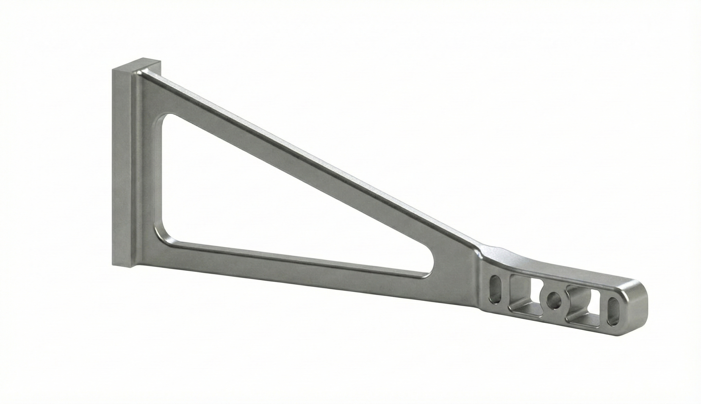
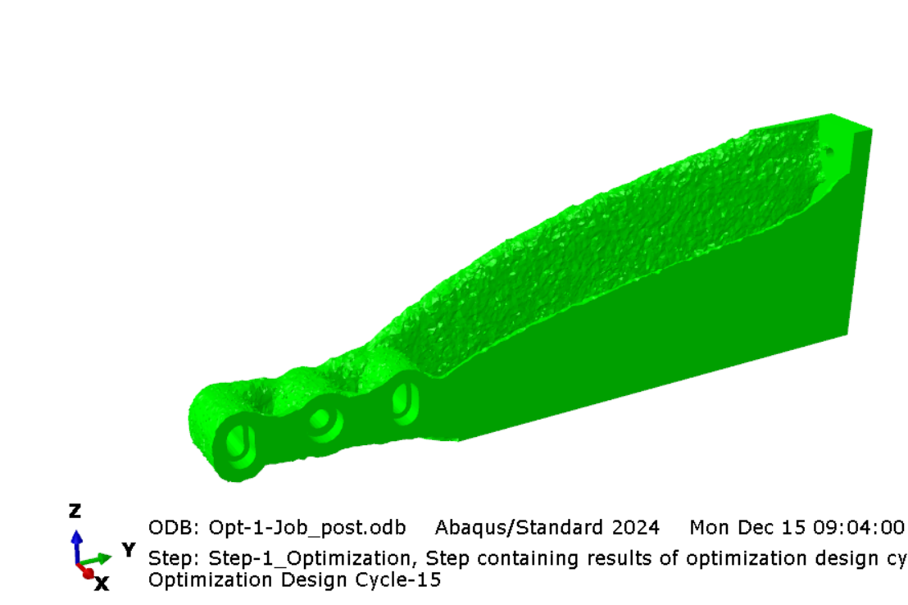
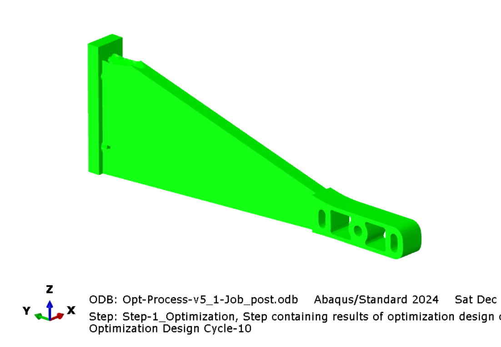
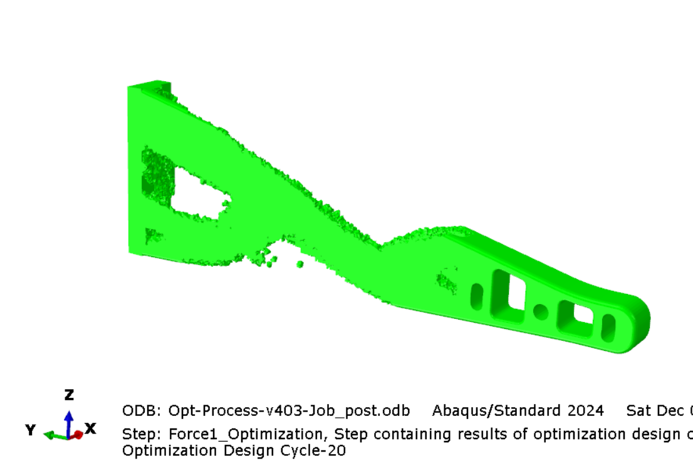
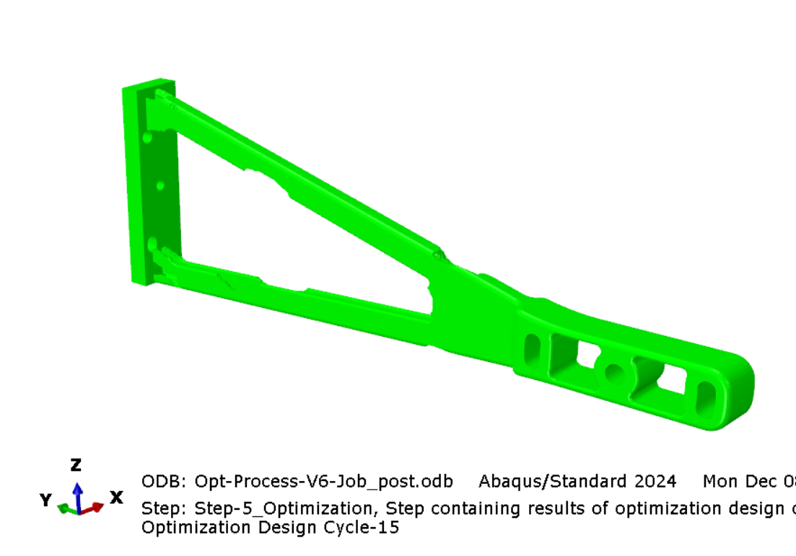
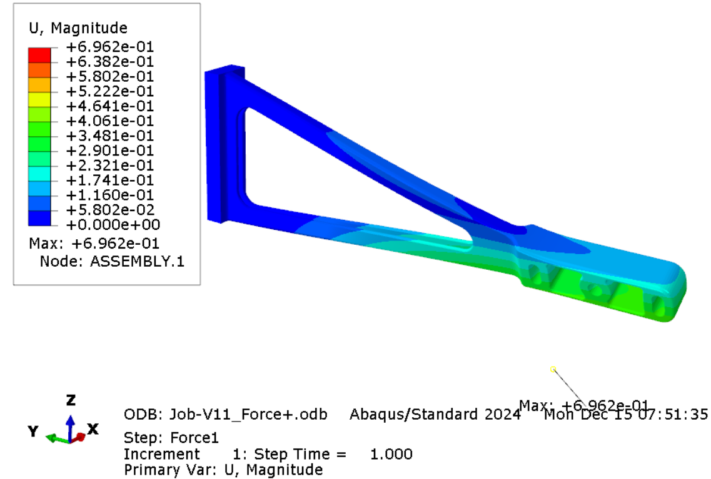
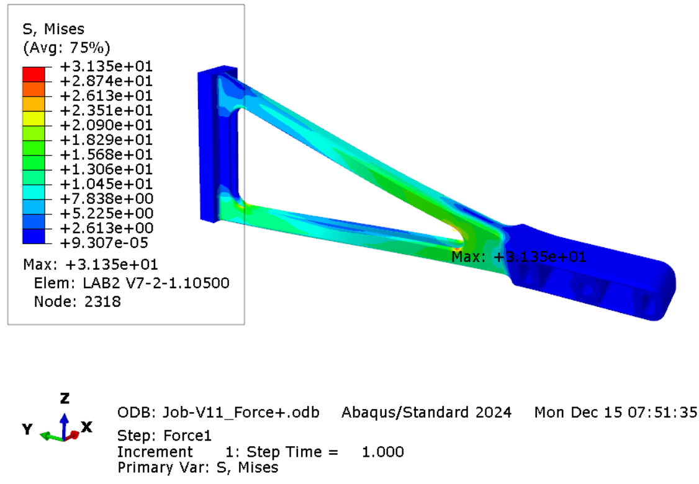
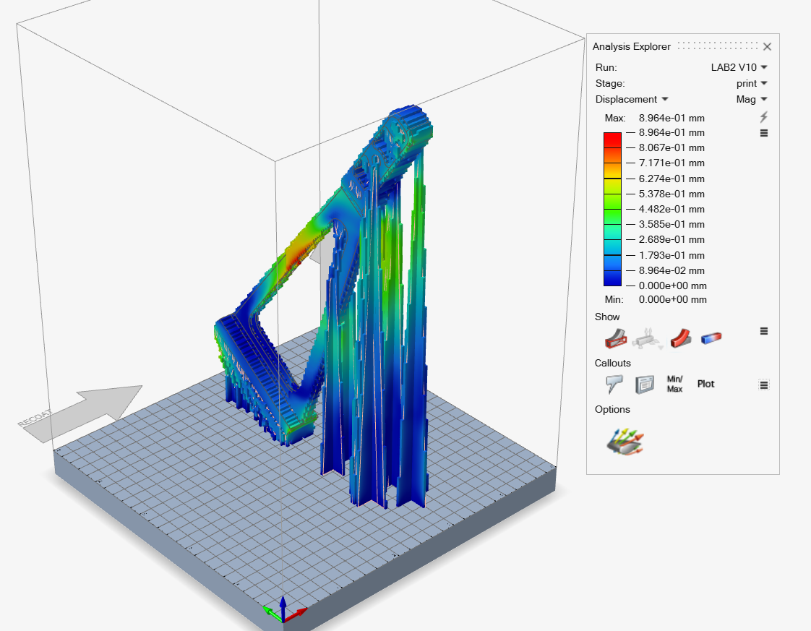

Engineering Challenge
Redesign a 2 kg aluminium bracket supporting a 3 kg sensor and motor assembly, preserving its functional interfaces while meeting stiffness, vibration and LPBF manufacturability constraints.
Additive Manufacturing · Topology Optimization
A 2 kg machine-arm bracket redesigned into a 202 g powder-bed-ready structure
A four-person additive-manufacturing project combining load-path-driven topology optimization, iterative geometric redesign and LPBF process preparation for a moving-machine component.

Redesign a 2 kg aluminium bracket supporting a 3 kg sensor and motor assembly, preserving its functional interfaces while meeting stiffness, vibration and LPBF manufacturability constraints.
The Challenge
The original Aluminum 6061-T6 bracket is mounted on the moving arm of an LPBF machine and carries a 3 kg monitoring sensor and motor. Its conservative geometry weighed approximately 2 kg and offered substantial potential for structural efficiency improvements.
The redesign had to keep the attachment and sensor interfaces unchanged, limit maximum displacement to 1 mm and maintain a first natural frequency above 40 Hz. The complete part and supports also had to fit a 250 × 250 × 300 mm build volume while controlling support volume, residual stress and thermal distortion.
Optimization Strategy
Altair Inspire
Abaqus
Optimization → Redesign → Optimization

Iteration 1

Iteration 2

Iteration 3

Iteration 4
DfAM Geometry
The dominant loads produced a triangular structural architecture between the preserved mounting regions. The topology result was rebuilt into smooth, continuous members with low and nearly constant wall thickness, reducing thermal gradients and improving process repeatability.
Open U-shaped beam sections replace enclosed cavities so unused powder can be fully evacuated after the build. This manufacturing-driven decision retained the efficient load path while avoiding inaccessible trapped material and unnecessary post-processing.
Structural Validation
Linear static analysis predicted a maximum displacement of approximately 0.6 mm, below the 1 mm limit, and a maximum von Mises stress of approximately 30 MPa, well below the reported 276 MPa yield strength.
Modal analysis placed the first natural frequency at 68.2 Hz, exceeding the 40 Hz requirement. The second mode was located at 529.4 Hz.


Powder-Bed Printing
Automatic orientation proposals were screened against the available build zone and manufacturing constraints. A manual orientation was then selected to reduce springback and printing-induced deformation while keeping the part stable inside the LPBF volume.
Automatically generated supports were manually refined to improve heat transfer and reinforce slender regions without adding unnecessary material. The supported-process simulation predicted approximately 1 mm maximum print-induced displacement, with residual stresses remaining below yield.

Outcome
Mass
Requirements
Methods & Tools